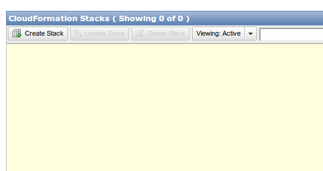
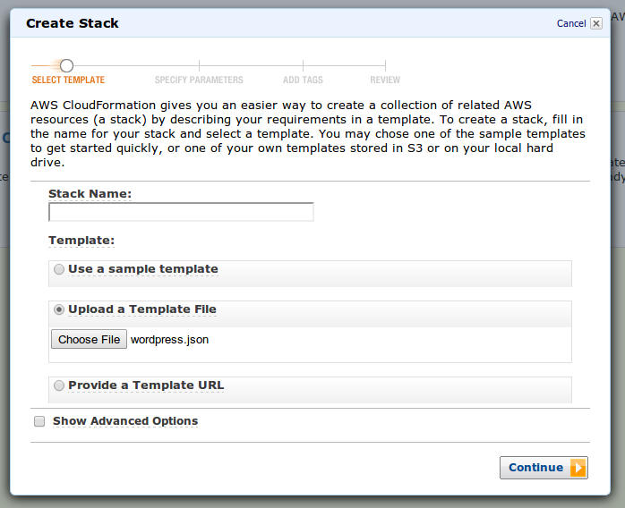
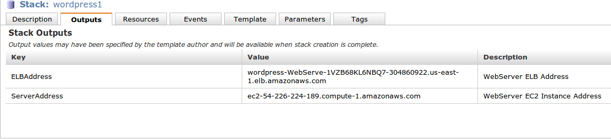
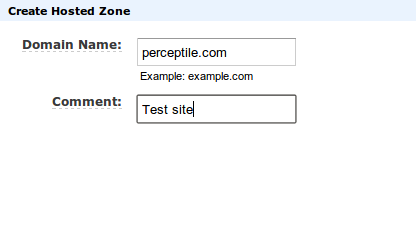
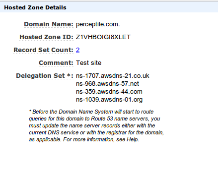
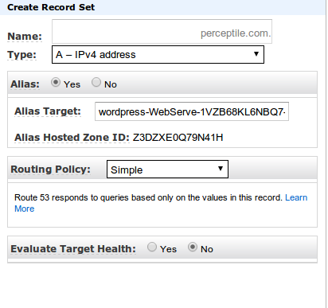
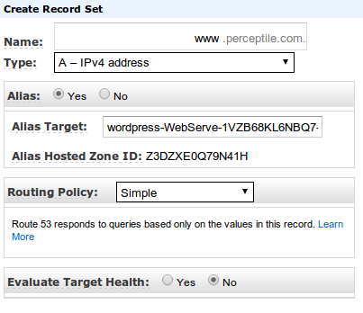
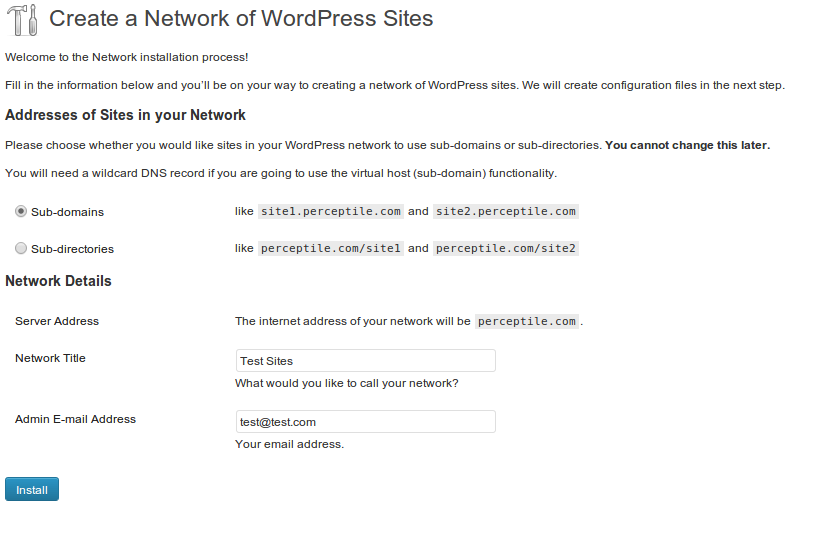
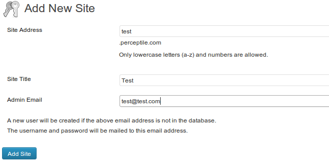
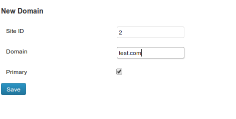

You may have noticed that this site recently changed over from blogger to wordpress. I made this change for a lot of reasons, which I will get into in more depth in a subsequent post.
In order to make this change, I setup a wordpress multisite installation with domain mapping. A multisite installation is when one wordpress install lets you run multiple websites. I like multisite because it enables me to flexibly manage multiple websites with less duplication of effort than a single wordpress installation for each website would allow me.
Wordpress multisite normally works with subdomains (ie mail.google.com), but I combined the multisite mode with domain mapping to enable top-level domains to be used for each sub-site (so, we have vikparuchuri.com).
This post will be kind of a meta-post, where I go into the details of how I set the site up. I am not a sysadmin by trade (what am I by trade, anyways?), but some new tools make it really simple to build repeatable configurations. I can't stress the repeatable part enough. If you setup an installation “by hand” and run a lot of manual system commands, it will be extremely hard to reproduce if you need to run another site, or if you want to backup and re-initialize your site with different hardware. It may take more initial work to make something repeatable, but it is well worth doing.
Feel free to contact me if you have any questions about this process. Note that these steps have been tested only on Ubuntu 12.10. It will most likely work with windows, but some steps may need to be modified.
These instructions can be used to setup a single site or a multisite, but there are some advantages to using a multisite rather than setting up several single sites.
To enable the configuration steps to be repeatable, I used the following technologies:
To get started, we first need to grab the wordpress-deployment repository:
git clone git@github.com:VikParuchuri/wp-deployment.git
Git is a version control system, and github is a social coding tool. If you haven't used git before, github has some good tutorials.
The git clone command will make a new directory where you cloned it called wp-deployment.
After you have cloned the repository, you will be able to find the cloudformation template at wp-deployment/cloudformation/wordpress.json .
We will now need to login to an existing AWS account to use this template. See Amazon AWS for details on making an account.
One you login, you should be at the management console. The management console allows you to interact with AWS resources. In this case, we care about the cloudformation section.
Once you are in the cloudformation console, you will be able to click on “create stack”. Note that creating a stack will cost money. You can use this tool to estimate your cost.

After clicking on “create stack”, you will need to choose to upload the wordpress.json template.

Once you fill in the stack name and click “next”, you will come to the “specify parameters” screen. This is where the extensibility of cloudformation comes to the fore. This template lets you specify a few different variables.
Once you have set these, you will need to check the box that says “I acknowledge that this template may created IAM resources.” IAM resources are an Amazon feature that allow for multiple user roles with various access permissions. In this case, we are creating a user for our wordpress server that has limited access.
You can now hit “continue” through the next two screens (add tags and review). Amazon will now get to work creating your stack!
While the stack is being created, let's talk about what is actually being made.
As I alluded to before, cloudformation is making an IAM user. IAM gives us greater security, because we are not keeping our main AWS credentials on the server we are making. In this case, we are making a user that can access Amazon S3 (file storage), and send email via Amazon SES. Access to S3 allows the instance to be “bootstrapped” with some needed applications when it is created. Basically, the application downloads some basic applications from S3 and does some initial configuration. This makes it simpler for us down the line. Access to SES will let our wordpress instance send email to users (if we enable it), and it will let us backup our wordpress installation to S3 (again, if we enable it).
The template will also create a server. This server will run wordpress, once we set everything up. It will need to have access to a database (or run a database locally). It will run the Ubuntu OS.
An ELB is an elastic load balancer. It basically redirects from an external facing URL to a group of servers. It is generally intended to balance load between several machines. In our case, it serves two purposes. Amazon Route 53 (which we will go into later) does not allow naked domain redirection (ie vikparuchuri.com instead of www.vikparuchuri.com) unless we use an ELB. The ELB also allows us to swap servers in/out on the backend however we want later.
A security group determines who can access our server, and from what ports.
You may have noticed that I did not include a database in the previous description of the stack. This is because I wanted to make it as flexible as possible what database you use. Also, including the database in a stack is a bit fraught with danger, because you risk losing all of your data if you accidentally delete a stack.
You can either create a database locally on the EC2 server you have just made, or make a separate database server using Amazon RDS. In my case, I used Amazon RDS because it makes it more flexible to add/remove EC2 servers without losing data.
Feel free to use either option. For the purposes of this tutorial, I will go with a local database, because RDS is a bit more complex to setup.
The stack should now have finished coming up. If you see a red light and the status “ROLLBACK_COMPLETE”, you should check “Events” under the stack detail to find the reason for the rollback. Often, it is something like having typed a configuration setting in incorrectly.
Now that the stack has been created, you can click on the stack in the console and check on the outputs.

The outputs will tell you the ELB address (referred to from hereon as ELBAddress) and the EC2 server address (referred to from hereon as ServerAddress). Save both of these somewhere: you can access them here anytime, but we will need them in several places.
We can now setup a local database for the wordpress instance. Feel free to skip this if you will be using an external database. Regardless of what database server you are using, it is still nice to have a user just for wordpress with limited access, though (this will automatically be setup later on).
Let's ssh into our instance:
ssh ubuntu@ServerAddress
We will need to install mysql:
sudo apt-get install mysql-server
Set whatever root password you want, but make sure you save it somewhere.
The following steps in this section (creating a database, a user, and granting the relevant permissions), will be done automatically. Only do it yourself if you want to understand the process or debug.
Now, let's create a database, a database user, and give the user the right permissions.
mysql -u root -p
Type in the password you set during the installation of mysql-server when it asks for a password.
Once you are in the mysql shell:
CREATE DATABASE wordpress;
CREATE USER wordpress IDENTIFIED BY '[insert password here]';
GRANT SELECT,INSERT,UPDATE,DELETE ON wordpress.* TO 'wordpress'@'localhost';
Save your wordpress user password somewhere.
We are now done setting up the database, and we can move on to the other steps. Use exit to terminate the ssh connection.
Route53 is Amazon's DNS management system, as I mentioned earlier. It will allow us to point users who go to www.oursite.com to our ELB. Feel free to skip this if you don't need this, or if you plan to manage your DNS some other way. You will always be able to access your site via ELBAddress.
To use Route53, first go to the Route53 Console.
Then, click on “Create Hosted Zone”.
This will pop up a box on the right that lets you enter your domain name. Enter your domain name without the www, and then click create hosted zone at the bottom.

Your domain will now appear in the center panel. Select your domain, and then look at “delegation sets” at the right. 
These are your namesevers, and you will need to set these as the DNS records with your registrar. The AWS help at the top right will give you information on this if you have questions.
Once you have setup the nameserver configuration, you will need to setup the records to point at your wordpress elb (which will point to your server).
To do this, you will need to setup two alias records, one for the “naked” domain (vikparuchuri.com), and one for the full domain (www.vikparuchuri.com).
Select your domain in the Route 53 control panel, and the click on “go to record sets” at the top left. This will bring you to a detail view of the record set.
Now, you can click on “Create record set”, which will pop up a box at the right.
We will be making an alias record that points at our ELBAddress. 
Click create record set when you are done, and then do the same for the full domain. 
We are now setup as far as what we need for the wordpress install.
We are now ready to do our basic wordpress configuration with ansible. This will setup a basic single-site wordpress install.
On our local machine, let's go to the wp-deployment folder that we created earlier with git clone:
cd wp-deployment
You will need to be running python 2.6+ before doing the following step. See this link for how to install python on ubuntu. You will also need pip, which you can get by doing easy_install pip after python is installed. See this link for a description of how to do this on a mac, and this link for how to do this on windows.
Now, using the python package manager pip, let's install the requirements. Feel free to use a virtualenv or not use one for this. A virtualenv is a python tool that allows you to isolate environments for each of your applications. I highly recommend looking at virtualenvwrapper if you choose to use a virtualenv.
pip install -r requirements.txt
Ansible has a concept called playbooks. Each playbook will match a certain subset of the potential hosts (in this case, the hosts are our ec2 instances, and subsets are the ones with the correct tags, which is why it was important to set tags earlier).
Playbooks will run certain commands on a certain set of hosts. In this case, we want to run the commands to correctly setup wordpress.
Get the template file from secrets/vars/wordpress_prod_vars.yml.template. Then, edit the values to reflect what you need.
The values from auth_key to nonce_salt are wordpress internal secret variables (salts). You can generate random ones here. When you insert them into the template, make sure that you put them between the quotes. The single quotes need to be there.
Your final template should look something like this (don't use these salts, generate your own!).
database_user: wordpress
database_password: INSERT_PASSWORD_HERE
database_host: localhost
database_root_user: root
database_root_password: INSERT_ROOT_PASSWORD_HERE
auth_key: '!UCVyMfA4q6~GOt]hr9!{9H/Ec8*rs9,9Ow|~n0pEbRacmLnD~Bb]GC9DW9/n+;k'
secure_auth_key: ':rg-V/}0h`0]Sx]/tR6YByYwulzT<TXd_tD^&CBY$+b$H`yxA{*`Bv! -Mmwqp ('
logged_in_key: '/QA}nvBwLjVIY>CPH(.}FQ%&)@e((yCn_V`RrVg>@[YiyX]DX9{q@&@H|!O7PiE@'
nonce_key: 'O!,(tiA;C,$]v&:,N6^60wT<-hq/p sF])0)Y9(pQ`u0!.J,;KYU]n%oTD]$o{Oq'
auth_salt: '>@E7siI)e|;rc@ qwo^9GX}D O+9DEh6@hd%PifC/yyvaH?c8)+7swV-D9=%WJF1'
secure_auth_salt: 'YLKK+W&Lrx-/4@r<1[AW9>v&Sg|HnZ. c)N`NNvBe!gc=`5[bqjSisslF+:L1x G'
logged_in_salt: '@AzQQr#}5;QD<iDSu#)|wM(UQ7?LV#I|F` ]=:LnFN`-!)1i!!I>a96iaqE*y[1+'
nonce_salt: '39OSa0v~!=vh0j[YXOmR?,tq-G]x:uphoNaO)Hj..&|2Dg@G:S|#}QZ@49+b46j5'
elb_address: INSERT_ELBAddress_HERE
A note on the elb_address. This is the site where your server will be accessed from. If you have a domain that you want to access your site from that you just setup with route53 (ie vikparuchuri.com), then use that. For multisite, make it the primary address you will be accessing from. If you don't have a domain, using the ELBAddress is fine.
Once your template looks good, you can save it without the .template extension (wordpress_prod_vars.yml).
Ansible needs to find your server, which it does via boto, which is a python utility to connect to Amazon AWS. To configure boto, you will need to make a .boto file with your AWS credentials.
Please see these instructions for more information on configuring boto.
If boto is setup correctly, you will be able to run:
cd wp-deployment/playbooks
./ec2.py
This should show you all your running EC2 servers.
These instructions will setup a single site via wordpress, which can then be extended to be a multisite.
We will need to first go to the playbooks directory.
cd wp-deployment/playbooks
If you look at the folder, you will see that there are .yml files, which are the playbooks, and a roles folder, which contains the code that the playbooks actually run on the hosts.
If you look at the roles folder, you will see two roles: “mu” and “wp”. The wp role will make a wordpress installation on a site, and the mu role will convert it to be a multisite installation.
Both roles have associated variables in their vars folder that you can edit if you want, but there is no real reason not to use the defaults.
We can now run ansible-playbook -vvv --user=ubuntu wp_prod.yml -i ./ec2.py -c ssh, and it will connect to our EC2 server and configure it with wordpress.
If the command creates an error, you may have done the cloudformation configuration incorrectly and tagged your machines improperly. You can look at the tags and fix this in the “hosts” section of the wp_prod.yml playbook.
Once the playbook finishes running, you can go to YOUR_SERVER_NAME/wp-admin/install.php on your server to begin wordpress installation. YOUR_SERVER_NAME should be what you entered for elb_address in the template. In this example, I set up route 53 to point to my ELB, and used the route 53 domain.
Once you can get to YOUR_SERVER_NAME/wp-admin/install.php, you can setup your site through the interface. One note of caution : do not use admin as your username. There are people who scan for the admin username and try to guess the password through brute force attacks.
Once you finish the setup screens, congratulations! You have setup a single user wordpress site.
Now, to activate multisite mode for your wordpress install, you will have to go to the wp-admin, and then click on tools/network setup. You can also go to the url YOUR_SERVER_NAME/wp-admin/network.php.
You can then type in some settings to setup network mode. Make sure you select sub-domains!

After you hit the install button, you will come to a screen that asks you to do some configuration. You can ignore those steps for now, as we will be doing that through an ansible playbook.
If you see a “Warning! Wildcard DNS may not be configured correctly!” in red at the top, this means that you have not setup *.YOUR_SERVER_ADDRESS.com to redirect to the ELB. You can do this using Route 53 alias records (see the previous section on this), or you can skip it for now. All this means is that whenever you make another site in the multisite network, you will need to setup a redirect from MULTISITE_NAME.YOUR_SERVER_ADDRESS.com to the ELB (you need to do this even if you are using separate domain names for each of your sites on multisite).
After activating multisite mode, you can then run the mu playbook to setup multisite.
cd wp-deployment/playbooks
ansible-playbook -vvv --user=ubuntu mu_prod.yml -i ./ec2.py -c ssh
And now you will be able to go to wp-admin on your site, and login. Multisite mode is now active, and you will be able to make a network of sites with their own domain names.
To make a new site, go to YOUR_SERVER_ADDRESS/wp-admin/network/site-new.php, and make a new site with a subdomain.

Set up the DNS for that subdomain to redirect to your ELB, even if you are not using Route 53. If you already have a wildcard redirect, then you can skip this.
If you want to use a top level domain, such as test.com, for the site:
Go to domain mapping in YOUR_SERVER_ADDRESS/wp-admin/network/settings.php?page=dm_domains_admin and set the id of the site (you can get this from the url when you click on a site in sites), and the domain. Make sure that primary is checked.

You will have to redirect the domain (www.test.com) and the apex domain (test.com) to your ELB. You can do this via Route 53, and the instructions are above.
The code for the cloudformation template and the ansible playbooks is on github, so please feel free to fork and submit a pull request if you want to change something.
There are some other useful things that I did to make wordpress easier to manage, and these include:
I intend to post about these down the line, as time permits. Please let me know if any of them are particularly interesting.